面板 UI 与可访问性走查 · 第 1 轮
w00022 t22。开发者 11-10：前端有些地方对用户不太友好，做一次大的 UI 与可访问性检查。
怎么查的
- 真实面板（4400）只读走了 15 页（首页、Work、Task、Task 速览、产物列表、评审板、文档、搜索、新建、编辑、会话、在跑、checkout、GitHub、404），每页 1440 与 390 两种宽度、亮暗两态，共 60 张截图；每张跑一遍 axe 自动检查，桌面亮色下按 Tab 45 次记下焦点。没有点任何会写入的按钮。
- 一个独立的前端审查者（Claude Sonnet）只看截图与代码，写了 28 条；我逐条对过截图与代码：属实 25 条，部分属实 2 条，不采纳 1 条（见最后一节）。
- 对话框的焦点在隔离的面板上试过：“关闭评审”打开时焦点在“取消”上，Esc 关掉后回到按钮，没问题。
总的感觉：灰色小字说明太多、内部编号与术语直接给人看、手机上要处理的信息被藏起来或排在最后。下面先列我直接修的客观缺陷，再列要你定的改动。题都是选答，只答想定的就行。
直接修客观缺陷，不用答
| 问题 | 修法 |
|---|---|
| 面板自己的样式对比度不够：空状态的“没有”、已结束的运行整行降透明度、“谁在动 · 临时”的标签（2.6 到 3.8，要 4.5） | 空状态改用次级色；已结束的行不降透明度，靠“已结束”标记区分；标签换达标的颜色与字号 |
Work 卡片的目标、Work 页的目标、Task 页的“当前情况”把 Markdown 源码原样显示（反引号、[链接](../../..)） | 与 Task 表一样按行内 Markdown 显示，链接只留文字 |
| 答题表单的“加说明”“清除选择”是 12px 灰字，点击区 36×18，看不出能点 | 换成与“改答”一样的小按钮，带图标 |
| 文档页的表格前几列被挤成一字一行，表里的地址被拆开 | 表格列给最小宽度，超宽时表格自己横向滚动；表里的行内代码不折行 |
| 手机上搜索结果把命中的字截掉，只剩一块高亮的“…”；标题里编号写两遍（“w00032/t05 w00032 t05 …”） | 结果行允许两行、命中处移进可见范围；去掉重复的编号 |
| 评审板上键盘要先穿过 iframe 里的全部控件（实测 15 个停靠点）才到答题区 | iframe 前面加一个“跳到答题”链接（聚焦时出现） |
读屏的结构：答题区与会话列表的标题从 h1 跳到 h3；左栏与 Task 页右栏两个 aside 同名；每张卡片里的“谁在动”都是同名的地标；文档里能横向滚动的代码块用键盘滚不动；会话页按键按钮、checkout 页的按钮读出来的名字与看到的字不一致 | 标题改 h2；两个 aside 各起名字；卡片里的框不做地标；代码块可聚焦；按钮名字包含看到的字 |
| 小于 24×24 的点击目标：顶栏状态点（20×16）、Work 表的展开按钮、复制提交号等 | 用透明的内边距把点击区放大到至少 24px，触屏下更大，外观不变 |
| 首页的面包屑与标题都是“首页”；404 页同一件事三种说法 | 只有一项的面包屑不画；404 页只留一个说法 |
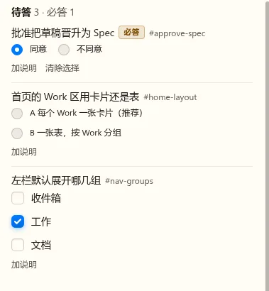
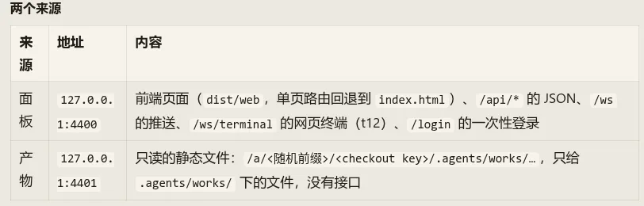
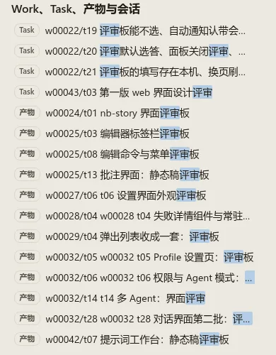
待定状态徽标与字段说明的对比度在上游，改不改上游
axe 报的对比度问题大头不在面板：nb-ui 的浅底徽标用 --accent-main、--status-success 当字色，11px 的字在浅底上只有 2.9 到 3.9（“进行中”“完成”“已采纳”“待答”都是）；表单字段下的说明用 --text-muted，3.0。主题里已经有给文字用的 --accent-text（亮色 #0060df），徽标没用它。另外左栏与正文之间的分隔线用键盘聚焦时只亮一条 1px 的线，在 nb-layout 里。
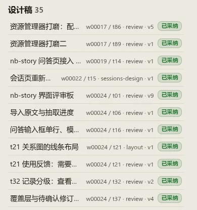
--accent-text 与各状态色往深混一档，字段说明改用次级色，分隔线聚焦时加粗加底色。代价：NeuroBook 应用里的徽标字色也会深一点，要在 Lab 里看一遍受影响的场景。只在面板里覆盖会出现两份规则，不推荐。待定Task 页把“产物与文档”（含待答）提到前面
现在右栏的顺序是执行 checkout、碰过的提交、产物与文档、Spec、证据、谁在动；手机上整个右栏排在几屏长的 README 后面，待答的评审要滚到底才看到。
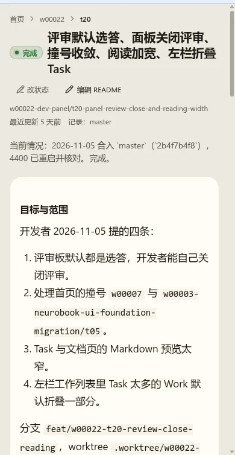
待定手机上的评审板
手机上第一屏几乎全是 iframe（最小 32rem 高，自己能横竖滚），题在它下面；手指落在 iframe 上滑动滚的是页面里的内容，要找空隙才滑得到答题区。
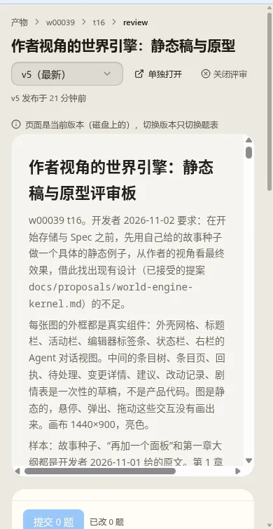
待定Work 页的 Task 表：手机上保留待答与谁在动，桌面上少几列
手机上表只剩“Task、状态”两列，待答与谁在动都被藏起来，要逐个展开才知道哪个 Task 等你答。桌面上 8 列，“记录”一列几乎每行都是 master，“产物”“待答”多数是 0；内容区窄于约 1070px 时整张表横向滚动。
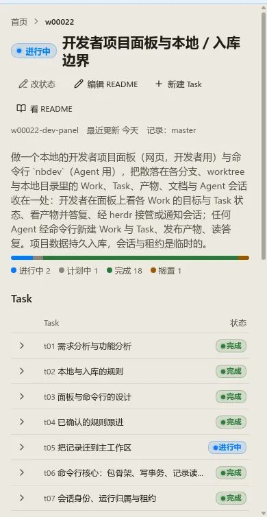
待定三个列表页先放要处理的
- 产物列表：35 条里几乎都是绿色“已采纳”，要处理的几条混在中间；手机上标题被右边的编号挤成几个字。推荐：完成态不画徽标、待答与等会话采纳的排在最前、手机上标题独占一行。
- 在跑页：已结束的与在跑的按时间混排，每条下面一整条日志的绝对路径。推荐：在跑的置顶，已结束的收成“已结束 N 个”，日志路径换成“复制日志路径”按钮。
- checkout 页：手机上是 9 列宽表，横向拖着看。推荐：手机上改成一项一张卡片（名称、分支、是否干净、领先落后、跑着的服务）。
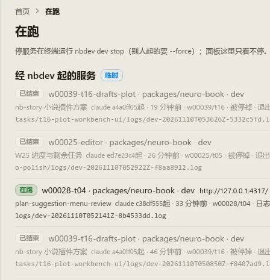
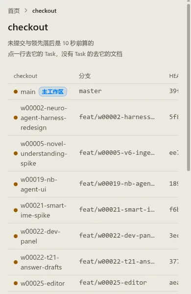
待定会话页的页头与详情头只留要紧的
页头常驻 herdr 版本、“已订阅推送”“对账补上了 22 次漏掉的状态变化”“另有 8 个短命或无关的进程没有列出”；详情头一行塞了标题、状态、Agent、pane、会话键、Task、标题来源七八样。
待定会话终端观看时的字号
观看时为了放下整屏把字号压到最小 5px；桌面右栏约 760px 宽、会话 160 多列时实际 6 到 7px，读不出内容，只能接管才看得清（接管会改 pane 尺寸）。
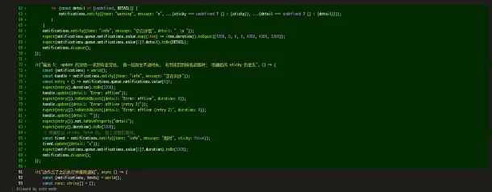
待定“代码已更新”横幅可以关、命令可以复制
合入之后、重启之前每一页顶上都有这条，命令只能手抄，手机上占两行。
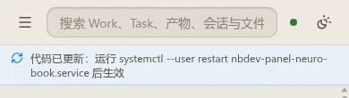
待定界面上的字
- 编号与路径：每道题后面的
#题号、会话完整键、日志绝对路径、产物 id。推荐默认不显示，悬停或复制时才有；出错时题号照样写出来。 - 术语：“provenance”“pane”这类英文直接出现在句子里。推荐换中文说法（提问者、窗格）。checkout、Work、Task 是 nbdev 自己的名字，保留。
- 灰色说明：12px 与 11px 的灰字在页面里有一百多处，例如在跑页页头的命令用法、checkout 页的“点一行去它的 Task”。推荐照 nb-ui 的设计语言删掉不看也能操作的，留下的放标签旁的说明图标。
待定“谁在动 · 临时”虚线框
t15 定的：持久的页面里混着临时的片段（租约），用虚线框标出。现在每张卡片里都有，没人在动时 Task 页也画一个写着“没有”的空框；标签压在框的上沿，底色与卡片不一样，像贴歪了。
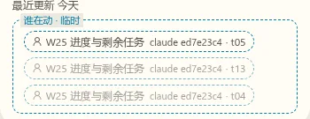
待定会话胶囊（“谁在动”里的那几个）能不能点
现在胶囊能用 Tab 聚焦，聚焦了只弹提示，什么也做不了；首页按 Tab，卡片区一半的停靠点是它们。收件箱里的胶囊还嵌在整行的链接里。
待定页头的操作分主次
Work 页右上角“改状态、编辑 README、新建 Task、看 README”四个一样淡的链接，手机上折成两行；看不出哪个是主要的。
待定你觉得不友好、上面没提到的地方
你说“有些地方对用户不太友好”，如果指的是上面没覆盖的地方，写在这里。
已定不采纳与暂缓
- 不采纳：“条件不满足时提交按钮不要灰掉”。nb-ui 的表单规范要求能事先防住的不报错、提交按钮不可用，照规范不改。
- 部分属实：“左栏 Work 的展开箭头只有鼠标能点”。键盘在树上用左右方向键展开收起，能用；但箭头在触屏上只有 20px，放进上面“小于 24px 的点击目标”一起修。
- 部分属实：分隔线聚焦时不是完全没有提示（那条 1px 的线会变实），只是太弱，并进第一道题。
- 暂缓：左栏上半部分固定占约 440px、Work 树只剩半屏。等这一轮改完再看，要不要把“资料”“现场”收成一行。